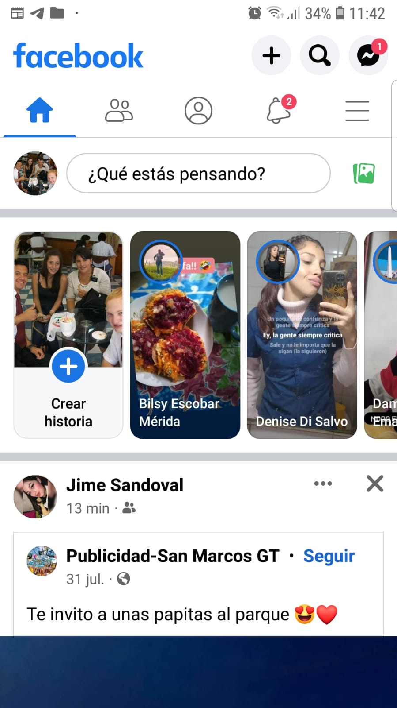

Proximity, Alignment and Repetition
Facebook is a social media platform that uses proximity, alignment, and repetition to create a cohesive and intuitive design. For example, the navigation menu at the top of the page is aligned with the logo and uses repetition of the same design elements to create a sense of consistency. Additionally, the use of proximity between the navigation menu and the content below it helps to create a clear visual hierarchy. The use of repetition in the design of the content cards, such as the use of the same border and shadow effects, helps to create a sense of unity and coherence on the page.
Contrast

YouTube is a popular video-sharing platform that uses contrast to draw attention to important elements on its website. For example, the search bar at the top of the page has a dark background and white text, which makes it stand out against the light background. The same is true for the "Sign in" button, which has a dark background and white text. Additionally, the use of different colors for the different sections of the page, such as the "Trending" and "Subscriptions" sections, helps to create visual interest and contrast.
White Space

Medium is a blogging platform that uses white space to create a clean and uncluttered design. The website has a simple layout with plenty of white space between elements, which helps to create a sense of breathing room and makes the content feel more prominent. Additionally, the use of a clean and consistent typography and color scheme helps to create a sense of harmony and balance on the page.